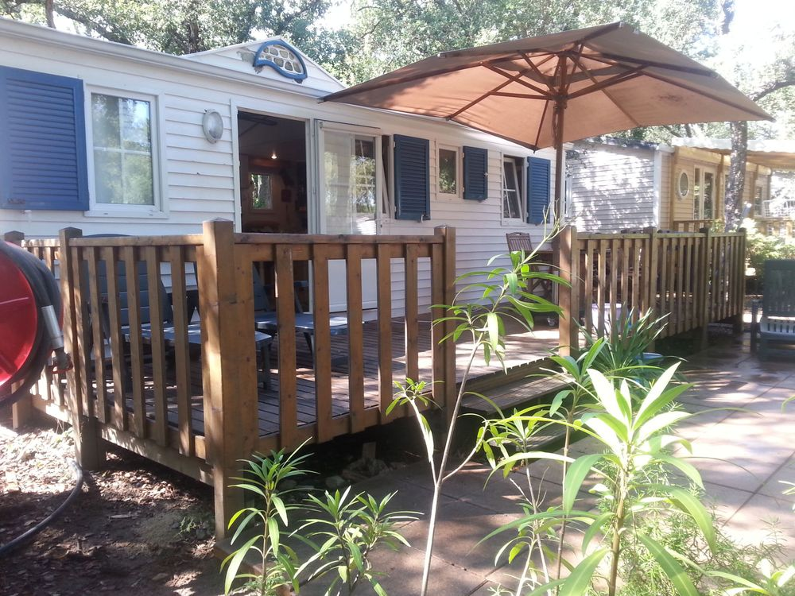

Huur nu een huisje aan het mooiste strand van de cote d'azur, vlakbij St Tropez. Onze moderne mobil home, prachtig gelegen op een rustige en schaduwrijke plek op camping Toison D'or, is completer dan mobile homes van de camping en geschikt voor maar liefst 6 personen!
De mobilhome beschikt over drie aparte 2-persoonsslaapkamers, een volledig ingerichte keuken (met oa. 4-pits gasfornuis, oven, magnetron, waterkoker, Senseo koffieapparaat...) een gezellige woonkamer met ventilator en airconditioning, een badkamer met douche en wastafel en een toilet. Er is een groot terras van maar liefst 24 vierkante meter wat uitgerust is met moderne, teakhouten tuinmeubelen en een grote parasol. Achter het huisje ligt een wijnveld van Domaine Pampelonne en even verderop kan u de wijn kopen die van deze druiven gemaakt wordt. Het huisje ligt op het mooiste en rustigste plekje van camping Toison D'or, onder mediterrane naaldbomen, waarin 's ochtends de eekhoorntjes van tak naar tak springen.
De camping ligt tussen Ramatuelle (5km) en St. Tropez (5km). Het mondaine St. Tropez is sinds de jaren '50 de ontmoetingsplek voor intellectueel en artistiek Frankrijk. In de jaren '60 maakte Brigitte Bardot van St. Tropez een mythe en nu is het nog steeds 'the place to be' voor iedereen die rijk en beroemd is of dat wil worden.
Bel voor vrijblijvende informatie: 06 - 10 20 61 82 of 030-637 40 48 of mail naar jaapjanpruijs@gmail.com
klik hier voor beschikbaarheid

Er zijn vele extra voorzieningen die allen bij de prijs zijn inbegrepen.
Klik hier voor grote afbeeldingen